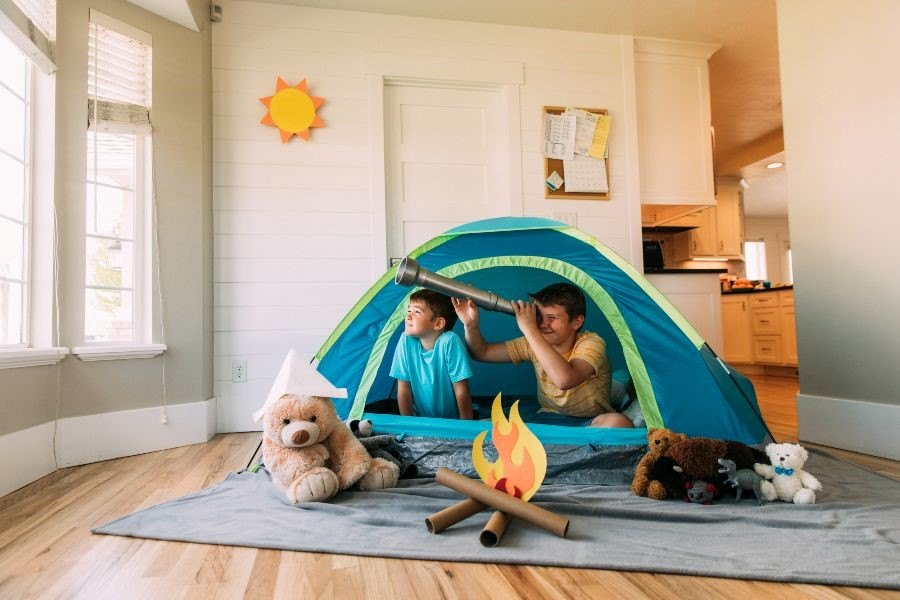

Location: Oude Postweg 1, 1251 SE Laren (about 10 minutes from central Hilversum)
Activity Type: Nature exploration, imaginative/loose parts play
Suggested Duration: 1–2 hours (or more, for slower exploration)
What to Bring: Water, snacks, shoes that can get muddy, change of clothes, small tools or containers for collecting (leaves, pebbles), a blanket
Facilities / Features: Picnic tables available for parents. The forest playground includes sand, water features, logs, tree stumps, climbing and nature elements.
Tips: Arrive earlier to avoid crowds. Use the natural play elements (water, pebbles, wood) to create scavenger hunts or mini challenges. Expect uneven paths, so strollers may be difficult in some places.
Speeltuin De Zoutkeet (Hilversum)
Location: This is a nature play location within the Gooi / Vechtstreek area
Activity Type: Nature play, sensory play with sand, water, mud, flora
Suggested Duration: 1 hour to 90 minutes
What to Bring: Waterproof shoes, clothes that can get wet or dirty, water, snack, towel
Facilities / Features: Mixed terrain with sand, water, flowers, small animals, and natural materials for play
Tips: Great for minimal-structure play. Let children explore their own path, but set boundaries. Use small containers or netting for “nature finds” like leaves or stones.
Picnic Spots in Hilversum
Location: Melkmeent, Hilversum — known picnic area in Hilversum
Activity Type: Picnic + light play or rest
Suggested Duration: 1–2 hours
What to Bring: Blanket, picnic basket, utensils, trash bags, sunscreen, hats
Facilities / Features: Designated picnic site within Hilversum (amenities may vary)
Tips: Arrive early to pick a good spot. Bring games (balls, frisbees) to extend the fun. Clean up everything to respect the area.
Parks with Picnic & Playground Amenities: There are several parks in Hilversum listed as having picnic sites, drinking water, restrooms, parking, and playground features. Use the site’s filter to find parks with “Picnic Site” amenity.

Creative & Indoor / Backyard Ideas
DIY Craft Project Day: Use everyday items at home (paper, string, cardboard, paint). Create a theme: “forest animals,” “rock painting,” or “nature collage” with items from outside. Duration: 30–60 minutes (plus drying time) Tip: Move the craft spot outdoors or near windows for easy cleanup and inspiration.
Backyard or Garden Game Circuit: Plan a mini obstacle course or scavenger hunt in your yard or balcony. Use toys, small hurdles, cones, and imaginative prompts (“collect 5 leaves”, “jump 3 stones”). Duration: 20–45 minutes Tip: Rotate activities so different age groups stay engaged.
Tips for Planning Family Activities:
Bring snacks, water, sunscreen, and hats
Dress in layers and clothes that can get dirty
Include options for all ages (a quiet activity + a more active one)
Check weather forecasts and plan alternates for rain
Use a checklist (snacks, wipes, trash bag, first aid)
Combine nearby features (e.g. do a nature walk + picnic + playground)
Always have a backup plan if part of the route is muddy or closed